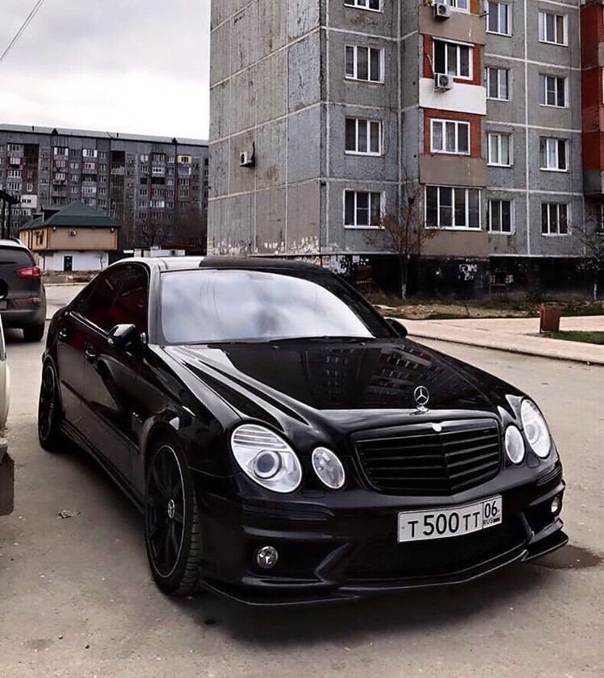
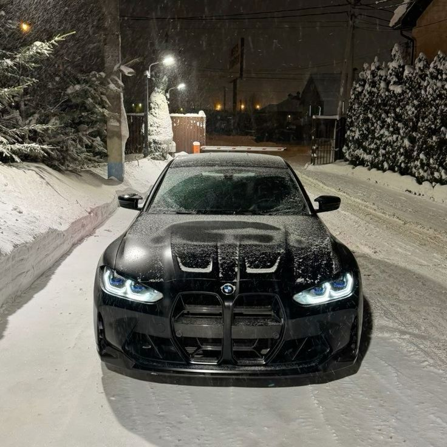
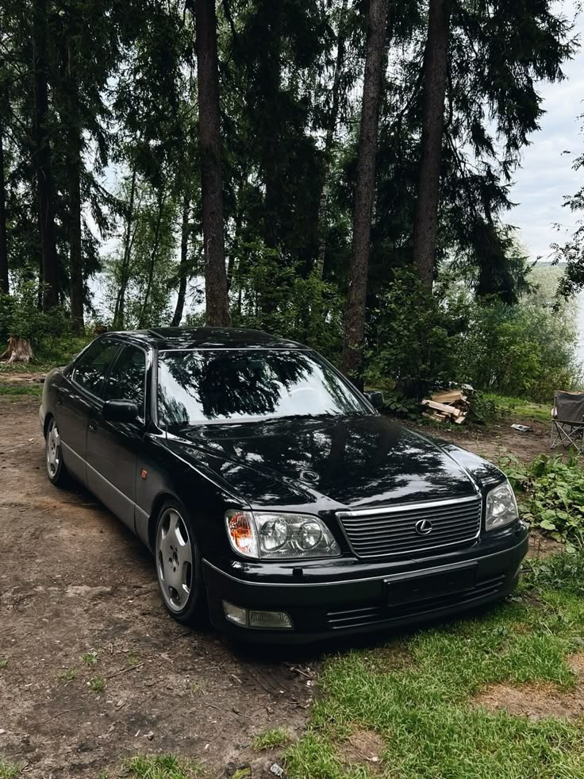

Three cars that I find stunning for their design and overall vibe.

Sometimes a car is more than just transportation. A beautifully designed car is more like a mechanical work of art to me. I used to not care about cars, but as I got older my friends introduced me to the beauty of cars and now I find myself appreciating them more and more.


When it comes to cars I tend to prefer black cars with tinted windows. I definitely like German cars the most, but I'm also a fan of Japanese cars. I included a picture of a Mercedes e55 AMG, a BMW M3, and a Lexus IS400. These 3 brands are some of my favorites and I think they all make really nice cars. I hope to one day own a nice car like one of these!